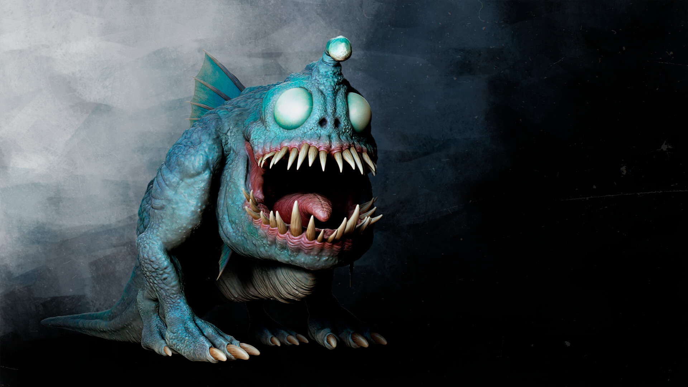
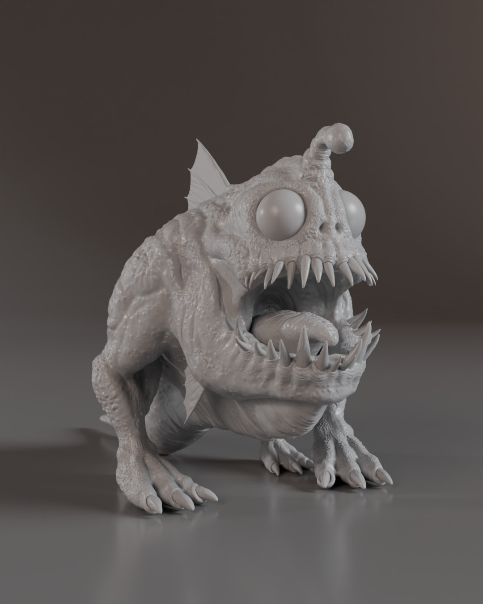
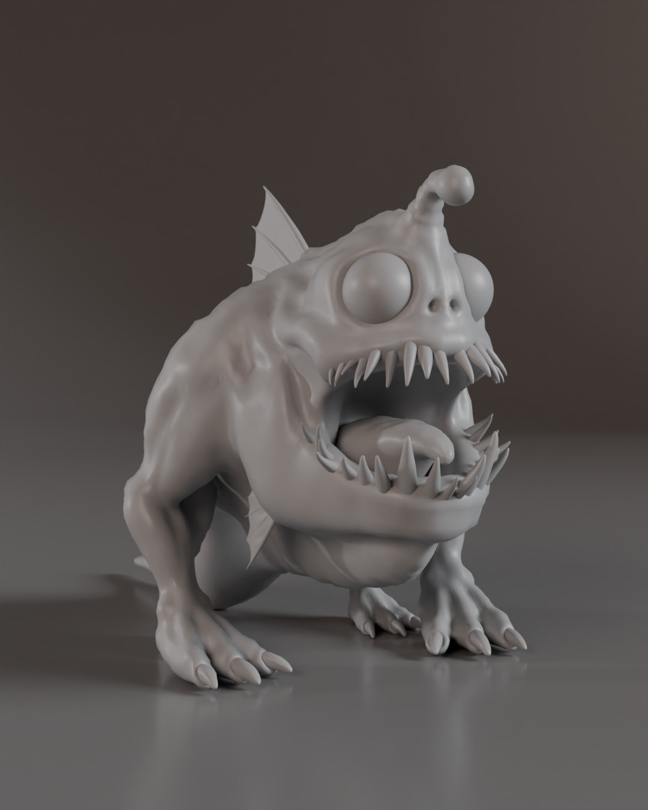
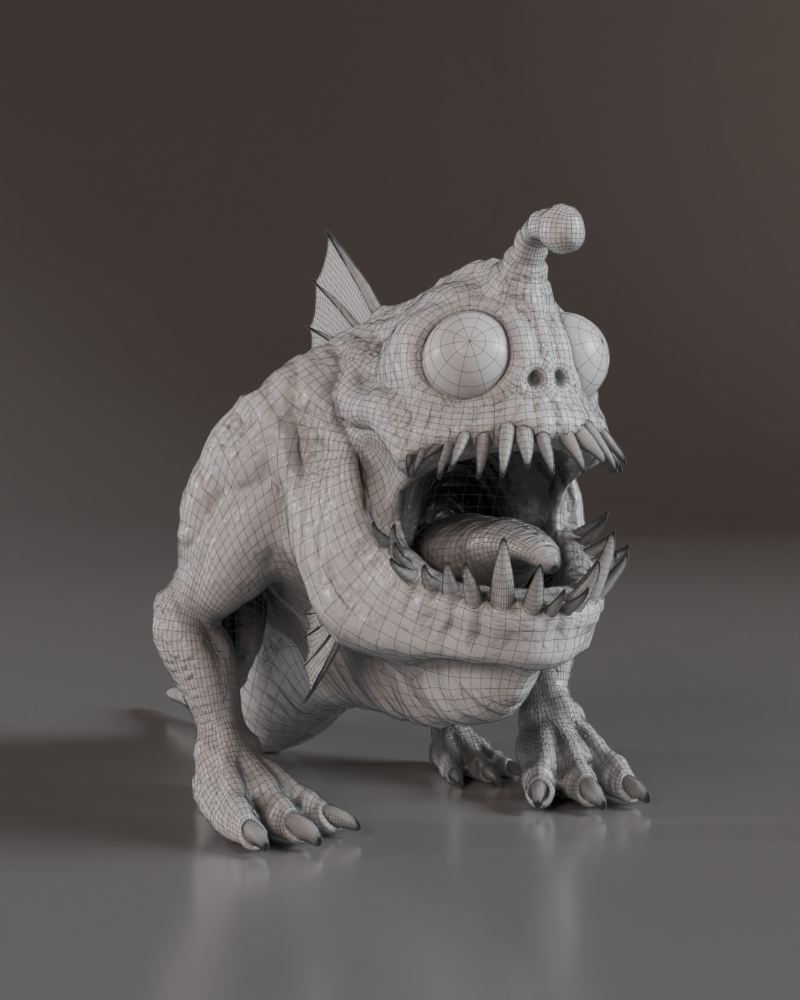

The R'lyeh Watcher

This project is a personal endeavor where I aim to create a creature inspired by the tales of HP Lovecraft that fascinated me as a child. With this creation, I seek to capture the essence of Lovecraft's atmospheric and mysterious descriptions, bringing to life an entity that could inhabit the darkest and most hidden corners of R'lyeh.
Modeling: ZBrush
Rendering: Redshift
Composition: Photoshop

High Poly.

Low Poly.

Wireframe.